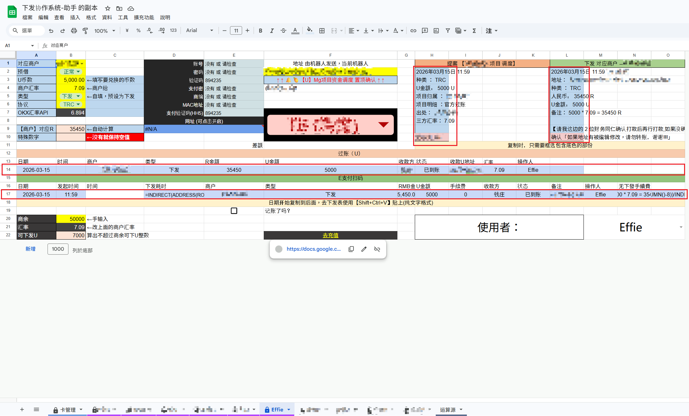
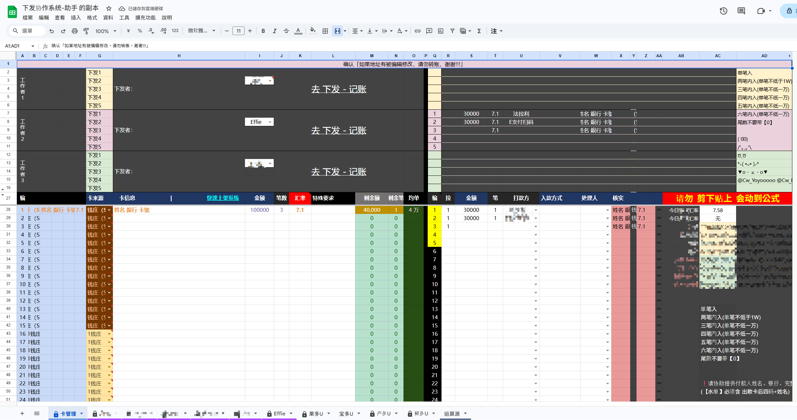
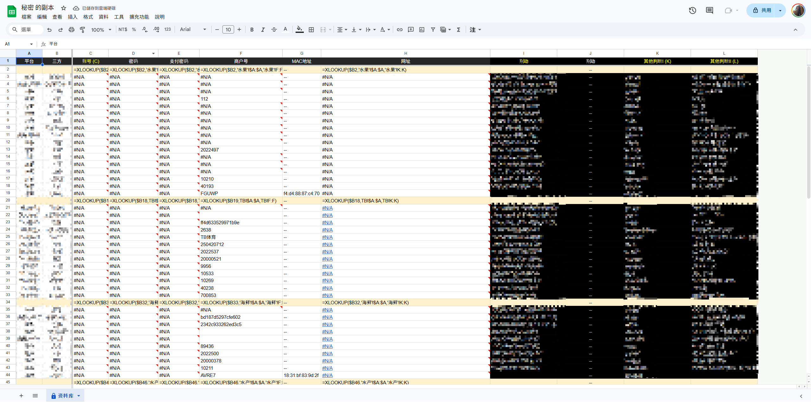
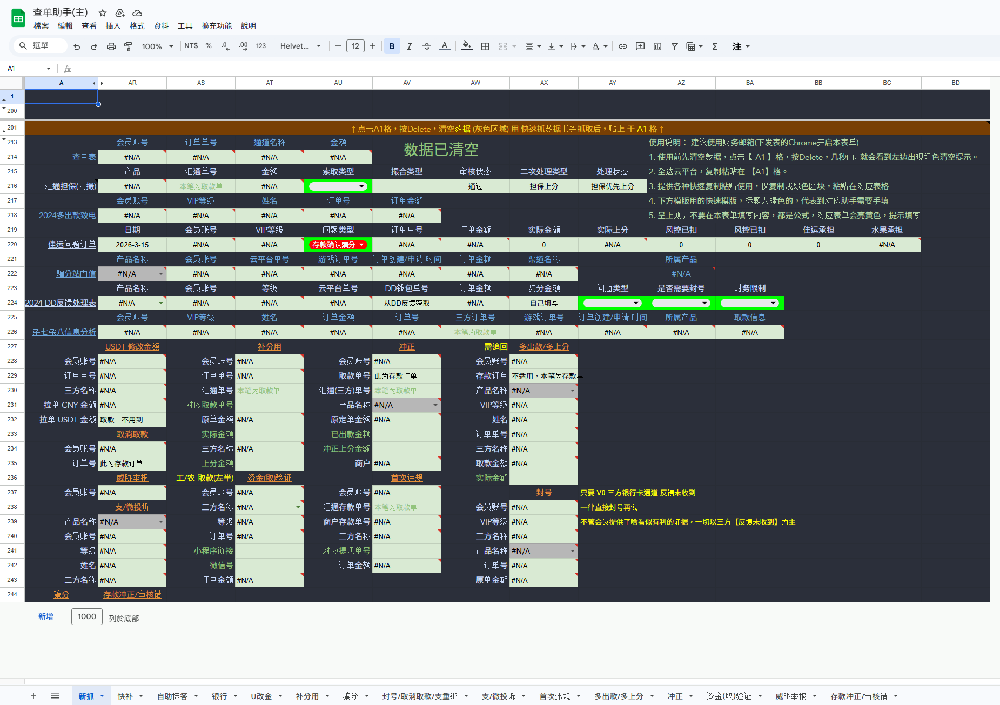
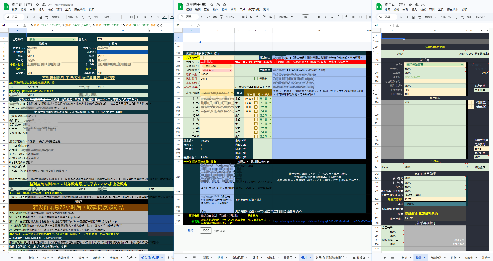
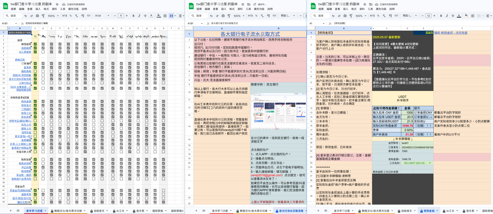
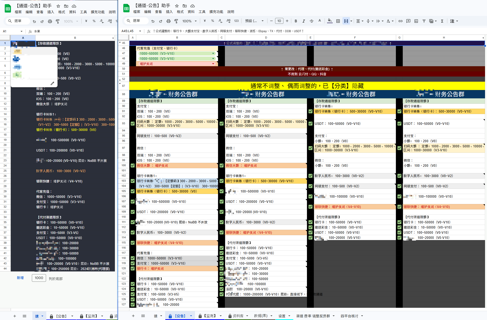
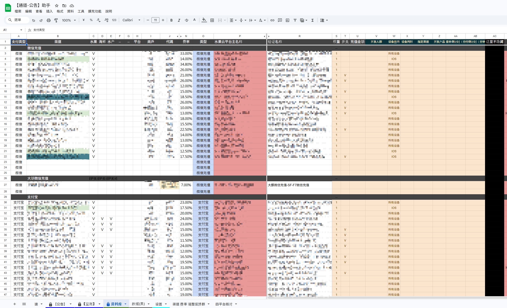
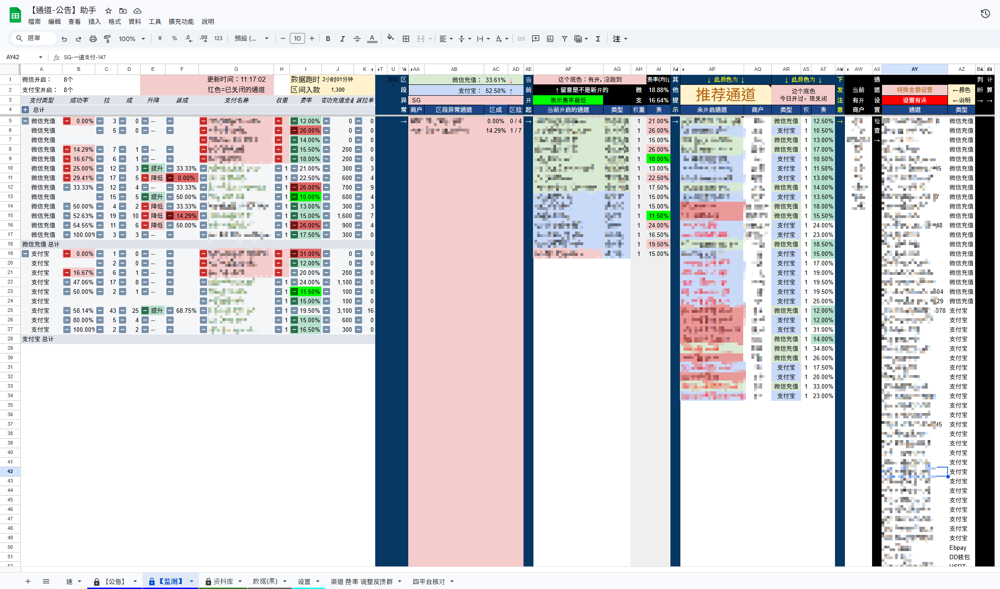
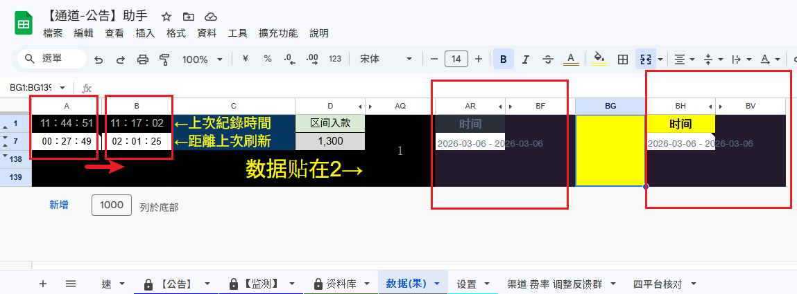

U 下發 / 模板產出 / 記帳產出
把事件輸入、模板生成與記帳登錄整合成一條流程，降低重複操作與漏登風險。
6+ 年營運、客服與財務協作經驗。擅長將混亂流程抽象成可持續運作的 SOP、報表系統、監控工具與內部知識系統，讓團隊在高負載環境中穩定運作。
我的作品不是單一報表，而是把營運場景拆成資料來源、規則判斷、系統輸出與跨部門協作四個層次，再用最低成本工具組成可長期運作的內部系統。
核心思路：先理解流程，再把資料、規則、輸出拆開，最後讓系統承擔重複工作，讓人專注於判斷、協調與例外處理。
以下示意圖展示我在真實營運與財務場景中，自行設計的內部工具。點擊圖片可放大檢視。
將卡管理、U 下發、模板產出與記帳同步整合為單一協作流程。

把事件輸入、模板生成與記帳登錄整合成一條流程，降低重複操作與漏登風險。

將卡資訊、分配與拆分規則集中管理，支援多人同時協作。
透過資料庫整合與腳本輔助，縮短後台登入操作時間，同時保留必要的資訊分離與風險控管概念。

把分散的登入資料重新結構化，減少人工切換與查找時間。
快速從後台擷取訂單資訊，並把查單、驗證、回覆與記錄流程做成可複用的工具。

系統內建流程提醒與步驟提示，讓操作員在高負載情況下仍可穩定完成判斷。

把查單結果、回覆模板與後續登錄內容快速生成，減少重複手打。
把個人經驗沉澱成團隊知識，讓培訓、交接與技能掌握可被追蹤與複製。

用可視化方式管理學習進度，快速知道誰能做、誰需要補強。

搭配板塊與流程卡片，讓知識系統更容易查找與更新。
整合資料庫、監控頁與差分比較機制，支援高頻營運判斷與通道策略調整。

把多平台公告需求與監控資料結合，讓資訊輸出更快更一致。

將分散通道資訊重新整理成結構化資料，作為其他表單與判斷系統的基礎。

利用條件格式與分區資訊，讓營運判斷變成高可視化流程。

透過雙表比較機制，快速判斷通道數據變化與趨勢。
以下作品皆來自真實營運 / 財務場景，以 Google Sheet 為主要基底，部分結合 AI 與 Tampermonkey 腳本，目的都是把重複、高風險、高負載流程變成可複用的內部系統。
整合多來源資料，自動整理每日與長期報表內容，減少人工整理時間，讓固定格式輸出穩定且可持續運作。
透過數據整理與條件格式建立即時監控儀表，快速判斷通道成功率、區段表現與開關決策，支援高頻營運判斷。
設計多人協作流程，將事件填寫、模板生成、群組發送內容與記帳流程整合為同一套操作系統，顯著降低重複操作與出錯率。
結合書籤腳本與 Sheet，快速抓取後台表格資料，讓訂單資訊整理、查單與財務流程判斷自動化，並內建流程提示。
依日常財務需求設計可重複使用的結算表、統計表與協作式報表，提升團隊日常處理速度並確保格式一致。
透過整合多平台資料庫與 Tampermonkey 腳本，設計後台快速登入工具，在兼顧資安風險控管的前提下提升日常操作效率。
除了做工具，也擅長把個人經驗沉澱為團隊可複製的知識系統，讓部門不只「能做」，還能「教會別人做」。
以技能矩陣方式管理部門內各項流程掌握度，快速知道誰會做、誰還需補強，提升新人帶教與交接效率。
把實務流程、銀行流水取得方式、工商驗證、商戶常見問題等內容整理成可查找、可複用的流程知識系統。
作品不是單點工具，而是一套明確方法：先理解流程，再抽象規則，最後用最低成本工具把流程系統化。
偏好以 Sheet 作為業務層與操作台，再逐步結合 AI、腳本與未來更完整的自動化技術，形成「人 + AI + 工具」的工作流。